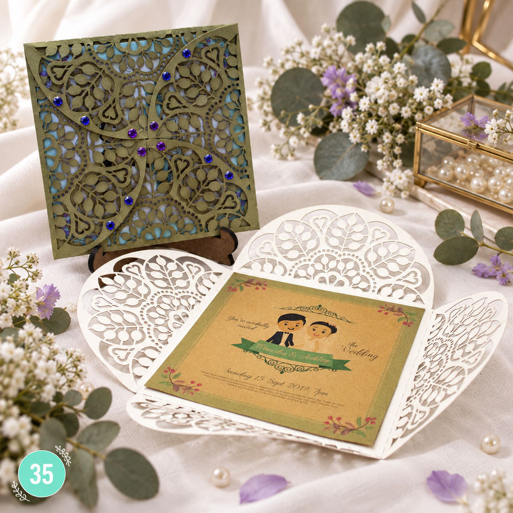

Invitación de boda · Encaje con apertura de cuatro pétalos · 35
$1.50 USD por piezaPrecio publicado: $1.50 USD por pieza. Confirma cantidad, materiales y personalización al cotizar.
Dinos cuántas piezas necesitas y te confirmamos el total y la fecha.
Cuatro pétalos de encaje se abren y dejan su invitación al centro. Un detalle que transforma la entrega en parte de la experiencia. Personalizamos los nombres y los datos de su celebración; consulta colores y acabados para darle su propio estilo. Cuéntanos por WhatsApp la cantidad y la fecha de la boda. Referencia BOD-35. Elaboración bajo pedido y envío gratis a todo El Salvador.
BOD-35Código para cotizar: BOD-35
Consejo para tu boda
Organiza los insertos según lo que necesita cada invitado
Si tu invitación incluye varias piezas, asigna una función a cada una. La tarjeta principal anuncia la boda; otras pueden explicar confirmación, recepción, traslado o recomendaciones del lugar. Revisa que un mismo dato no aparezca con versiones distintas en dos insertos. Cuando cierta información solo corresponda a algunas personas, prepara un sistema de organización para no mezclarla durante el montaje. Antes de cerrar los sobres, utiliza una lista de control por destinatario. Tener las piezas ordenadas evita confusiones y permite que el invitado encuentre lo que necesita sin leer varias veces todo el conjunto.
Separa los grupos con instrucciones distintas y etiqueta temporalmente sus sobres, para que la distribución final no dependa de memorizar cada caso.
Lectura relacionada: The Knot: personalización de invitaciones.
Personaliza tu invitación
Consulta colores, nombres, fecha, texto del evento y cantidad. Los materiales, acabados y posibilidades de personalización se confirman según el modelo y tu pedido.
- Envío gratis a todo El Salvador
- Revisamos contigo la personalización, el precio final y la fecha de entrega antes de producir.
- Dinos para cuándo lo necesitas y te confirmamos el plazo.
¿Qué necesito para solicitar precio?
Indica el código del modelo, cantidad, fecha del evento y colores deseados. Te confirmamos precio, disponibilidad y plazo de entrega antes de realizar el pedido.
Atención en Santa Ana y envíos en El Salvador
Guanaprints atiende en el local de Imprenta Francia, Santa Ana, El Salvador. Envíos gratis a todo El Salvador; coordina el plazo y la entrega al cotizar. WhatsApp: +503 7289-2625.